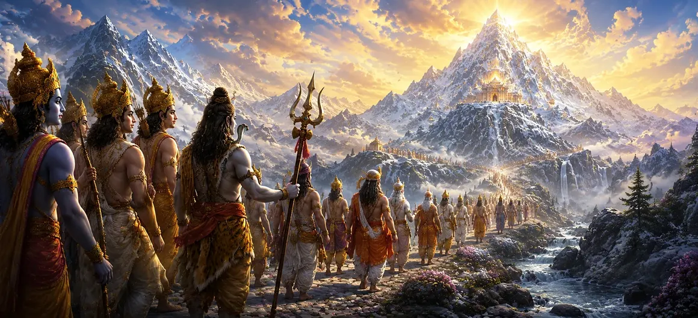

This chapter describes the sacred journey undertaken by the gods and sages to Mount Kailāsa, the divine abode of Lord Shiva. Following the events surrounding Dakṣa’s sacrifice, the celestial beings sought reconciliation, wisdom, and the blessings of the Supreme Lord. Their pilgrimage symbolizes the soul’s journey toward spiritual truth, humility, and divine grace.
Realizing the consequences of Dakṣa’s pride and the suffering that followed, the gods understood the necessity of approaching Lord Shiva with sincerity and reverence. They resolved to seek His forgiveness and guidance, knowing that only He could restore harmony and balance.
The journey to Kailāsa led through majestic mountains, sacred rivers, and regions blessed by divine presence. Every step of the pilgrimage inspired devotion and reminded the travelers of the greatness of the Lord they sought to meet.
As they traveled, the gods reflected upon recent events and the lessons they had learned. They recognized the dangers of pride, the importance of humility, and the boundless power of devotion. The pilgrimage became not only a physical journey but also a spiritual transformation.
At last, the travelers beheld the glorious peak of Mount Kailāsa. Radiant with spiritual splendor and surrounded by divine beauty, the sacred mountain inspired awe and reverence. Its sight filled their hearts with hope and anticipation.
The journey toward the Divine is both physical and spiritual.
Recognizing one's mistakes opens the path to grace.
True wisdom is found by approaching the Divine with sincerity.
As they neared Kailāsa, the gods and sages prepared themselves inwardly and outwardly to stand before Lord Shiva. Their hearts became filled with reverence, gratitude, and a sincere desire to receive His blessings.
Kailāsa represents more than a sacred mountain. It symbolizes the highest state of spiritual realization where the seeker transcends ego, ignorance, and attachment. The journey toward Kailāsa mirrors the inner journey toward union with the Divine.
This chapter teaches that every sincere seeker must undertake a journey toward truth and self-transformation. Like the gods traveling to Kailāsa, devotees progress spiritually when they approach the Divine with humility, repentance, and unwavering faith.
Mount Kailāsa stood before the travelers as a symbol of divine perfection and eternal peace. Its shining peaks, sacred atmosphere, and celestial beauty inspired profound reverence within the hearts of the gods and sages. The mountain was not merely a destination but a manifestation of spiritual purity and the presence of Lord Shiva Himself.
The journey to Kailāsa teaches that those who sincerely seek truth and divine guidance are never abandoned. Every challenge faced along the path becomes a means of spiritual growth. The gods reached their sacred destination because they approached it with humility, devotion, and a genuine desire to learn from the Supreme Lord.
"The path to the Divine begins with humility and ends in enlightenment."
Continue exploring the sacred events of Sati Khanda as the gods and sages complete their pilgrimage to Mount Kailāsa. Their journey of humility and devotion prepares them to offer heartfelt praises to Lord Shiva in the next chapter.